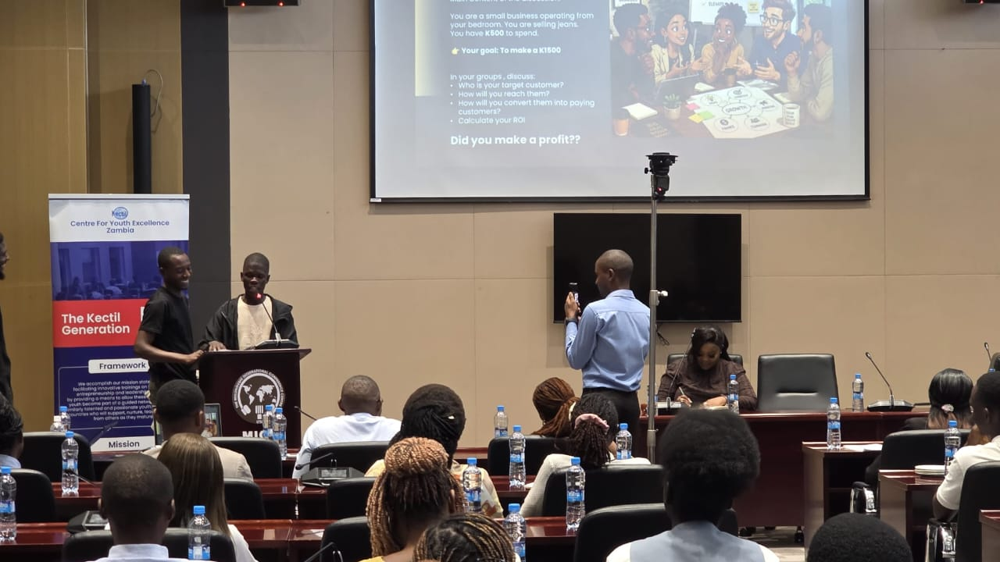
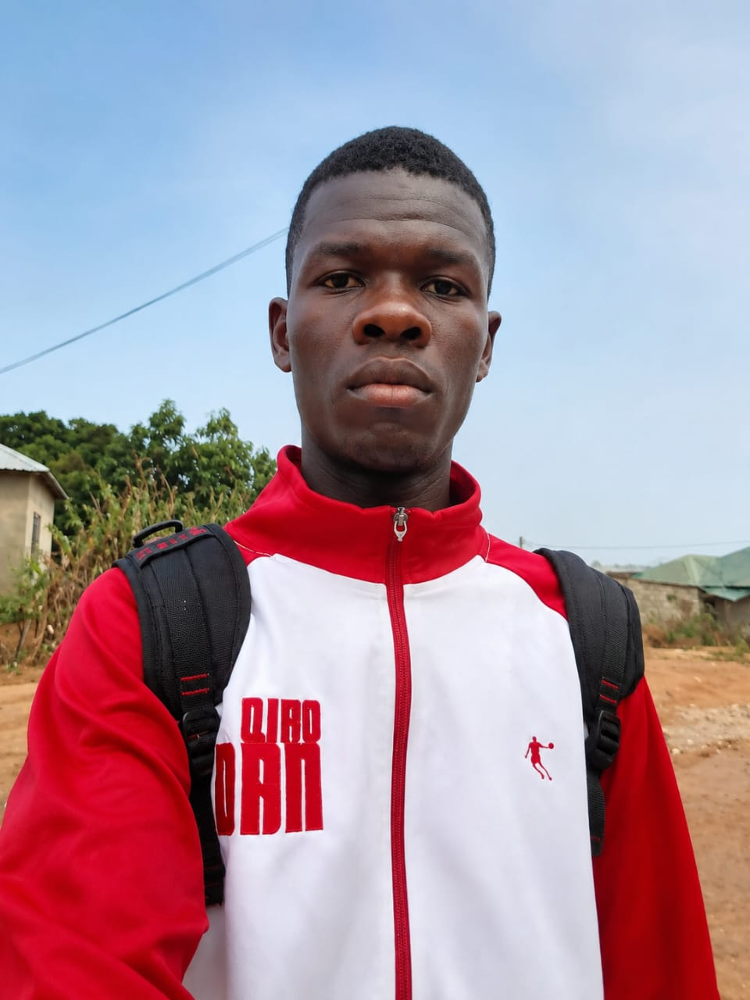

01
Lead by example
Taking responsibility, staying consistent and encouraging others through action.
SUNDAY MWANZA • LEADERSHIP • IMPACT
I’m Sunday Mwanza, passionate about leadership, working with organisations, supporting meaningful projects and bringing people together around ideas that can make a difference.

ABOUT ME
My name is Sunday Mwanza. I am passionate about leadership, working with organisations and contributing to initiatives that bring people together for a meaningful purpose.
I value service, teamwork, learning and responsible leadership. I enjoy being part of spaces where people can share ideas, develop solutions and turn plans into practical action.
This website is a place to learn about my leadership journey, projects and programmes, achievements, organisations and clubs, and the work I am involved in.
MY LEADERSHIP
I believe good leadership starts with listening, taking responsibility, empowering others and turning shared goals into action.
Taking responsibility, staying consistent and encouraging others through action.
Creating spaces where people can participate, learn, contribute and grow.
Connecting individuals, organisations and teams around shared objectives.
Focusing on practical work that leaves people, projects and communities better.
PROJECTS & PROGRAMS
A growing portfolio of initiatives, programmes and collaborations. Specific project details can be added as the work is documented.
Initiatives focused on participation, community engagement and positive change.
Activities that encourage leadership, confidence, responsibility and personal development.
Working with organisations, clubs and partners to support shared goals and practical programmes.
ACHIEVEMENTS
This section is designed to showcase verified leadership roles, awards, recognitions, completed programmes and other milestones.
GALLERY
Photos from leadership activities, projects, programmes, meetings, events and community work.


CONTACT ME
For organisations, clubs, partnerships, projects, programmes, leadership opportunities or collaboration, I would be glad to connect.